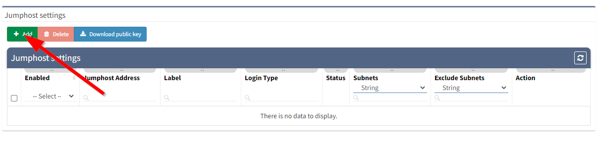
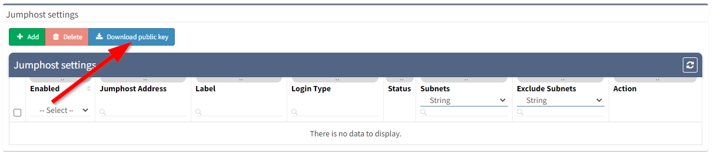
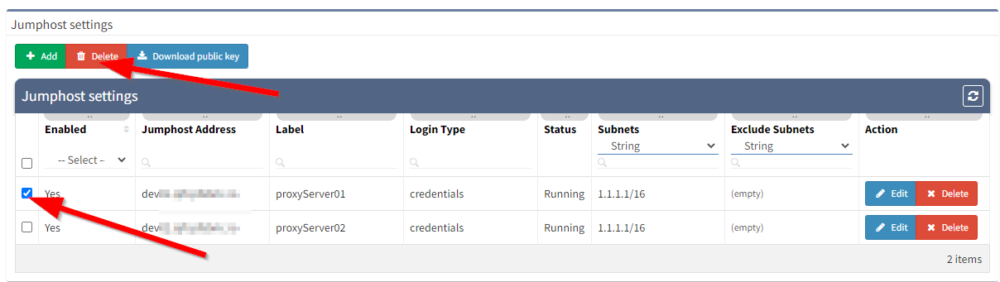
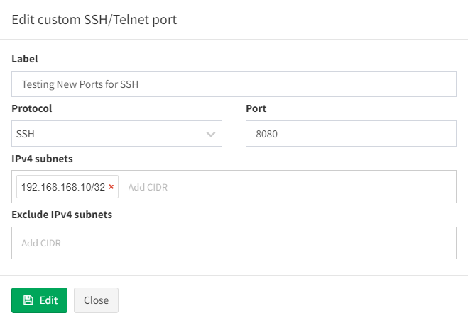

SSH/TELNET
Fine-Tune SSH/telnet CLI parameters
The IP Fabric's discovery is primarily using Command Line Interface (CLI) to discover network elements. There are certain default CLI parameters that can be found in Settings → Advanced → SSH/TELNET:

Network device login timeout
Timeout before the logging prompt is received. It may take longer for remote branches over low-speed lines, or destined to overloaded devices.
Network device session timeout
Too many Command Timeout errors during the Discovery process may indicate that Network device session timeout is too short and it may be necessary to expect a delay for a response to arrive.
Maximum number of parallel sessions
To prevent flooding your network with too many SSH/TELNET sessions set Maximum number of parallel sessions. This setting can be also helpful if the AAA server (TACACS/Radius) has a limit of parallel AAA requests for users.
In rare cases, the Cisco ISE or similar systems may rate limit the command authorization. When there are too many authorization failures and Cisco ISE is in place, try to limit the number of parallel sessions down to 10 and steadily increase.
Basic failure
How many times to retry a connection for any error, except authentication failure.
Authentication failure
Authentication failure can occur even if a user is authorized to login but may happen, for example, when an AAA server is overloaded or an authentication packet is lost.
Command Authorization Failure retries
If you see many examples of Authentication error during the Discovery process, please adjust Authentication failure and Command Authorization Failure retries.
Example of error message in Connectivity Report
According to the summary of issues in the very first completed snapshot, the CLI Settings can be adjusted. Here are some of the most common errors and adjustments:
| Error | Error Type | How to mitigate |
| connect ETIMEDOUT XX.XX.XX.XX:22 | Connection error | Received no response from the destination. |
| connect ECONNREFUSED XX.XX.XX.XX:22 | Connection error | The connection to the destination is being blocked by an access-list or firewall. |
| All configured authentication methods failed | Authentication error | Unable to authenticate to the destination host |
| Authentication failed | Authentication error | Unable to authenticate to the destination host |
| Authentication failed - login prompt appeared again | Authentication error | Unable to authenticate to the destination host |
| SSH client not received any data for last 120000 ms! cmd => show vrrp | e #^$ | Command timeout | The command 'show vrrp | e #^$' timed out. Increase device session timeout. |
| Can't detect prompt | Command timeout | Unable to detect CLI prompt. Increase network device login timeout. |
| Command "enable" authorization failed, tried 2x | Command authorization failure | The command wasn't authorized. Increase command authorization failure retries or increase the timer value (ms) |
Info
Jumphost allows to set-up connection to the server which can be used as a proxy server for discovery purposes. IP Fabric uses an ssh connection to the jumphost server and python on the client and server side. Please check the following requirements for the jumphost server.
Warning
Please bear in mind, that once the connection is established, it will be enabled permanently, until disabled or removed! If there are any network issues, IP Fabric software will try to establish a connection periodically.
Warning
At least one seed IP address has to be provided as a starting point behind Jumphost in seed configuration.
Setting up Jump host
-
Open jump host settings, using item Settings → Advanced → SSH/TELNET
-
At the bottom of the page, please select Add button

-
Fill in all necessary data
-
Label - the name for configuration (mandatory)
-
Jump host Address - IP address of FQDN name (mandatory)
-
IPv4 subnets - subnet in CIDR representation, allows adding more than open, separated with spaces (mandatory)
-
Exclude IPv4 subnets - subnet to exclude in CIDR representation, allows to add more than open, separated with spaces (optional)
-
Login type
-
Use credentials - require to provide username and password
-
Use SSH keys - if you copied ssh public key to the proxy server, it won’t require providing a password (please jump to the SSH key configuration section)
-
-
Username - Username for authentication (mandatory)
-
Password - password for authentication (mandatory if ‘Use credentials’ is used)
i.e., refer to the picture below

-
-
Click Add button
-
If a connection is open, you will see the Running status in Jumphost list

Warning
If you use 0.0.0.0/0 or another subnet that includes your network from which you are connecting to IP Fabric, make sure you put your network to “Exclude IPv4 subnet”. Otherwise, your IP connection will be lost and you will have to recover from the console.
SSH key configuration
Info
Adding ssh key to proxy server allows you to avoid using passwords for authentication
-
Download ssh key from Jumphost settings

-
Save jumphost-public-key.pub
-
Copy file content to authorized_keys file of the user that will authenticate with Jumphost server. Please follow official ssh.com documentation https://www.ssh.com/ssh/authorized-key
-
Restart sshd service to apply settings
-
If the key has been copied you can use the option ‘Use SSH keys' while adding a new Jumphost server, instead of 'Use credentials’
Disabling Jumphost connection
-
Edit configuration that needs to be disabled, i.e.

-
Change the setting to Disabled,
-
Click the Update button

Remove Jumphost configuration
-
On Jumphost servers list, check configuration that needs to be removed
-
Click Delete button

Discovery with Jumphost issues
Warning
Only TCP connections work through the Jump host. Traceroute with ICMP is not supported so the discovery process might not be able to get over the unreachable part of the network (for example sites separated by the provider’s network). In this case, you will have to add at least one IP from each site to the seeds settings.
Custom SSH/Telnet ports
Info
Custom SSH/Telnet ports settings enable the discovery process to use different than standard ports for connecting. The standard for SSH is port 22 and 23 for Telnet.
In the following example we will configure the discovery process to use port 8080 for SSH connections towards firewall sitting behind 192.168.168.10 IP address:

As a result of such configuration, we would create a new item under the ‘Custom SSH/Telnet ports’ configuration, which will be applied to every new snapshot created by IP Fabric.